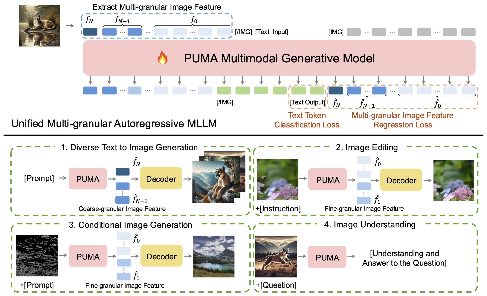
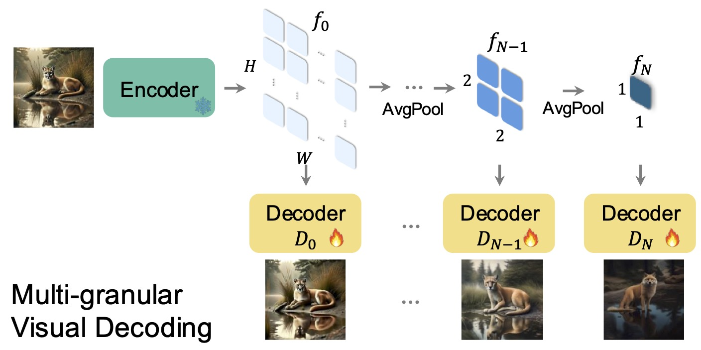
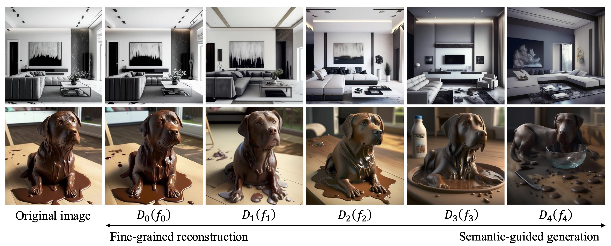
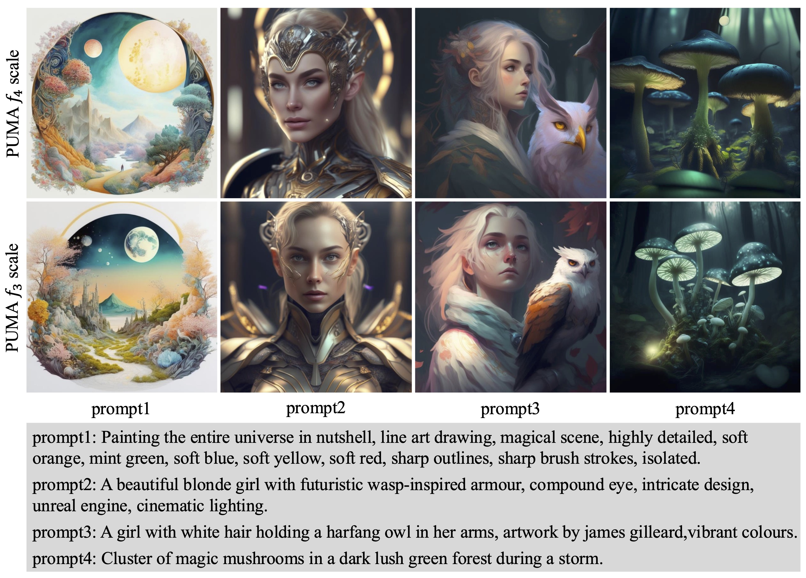
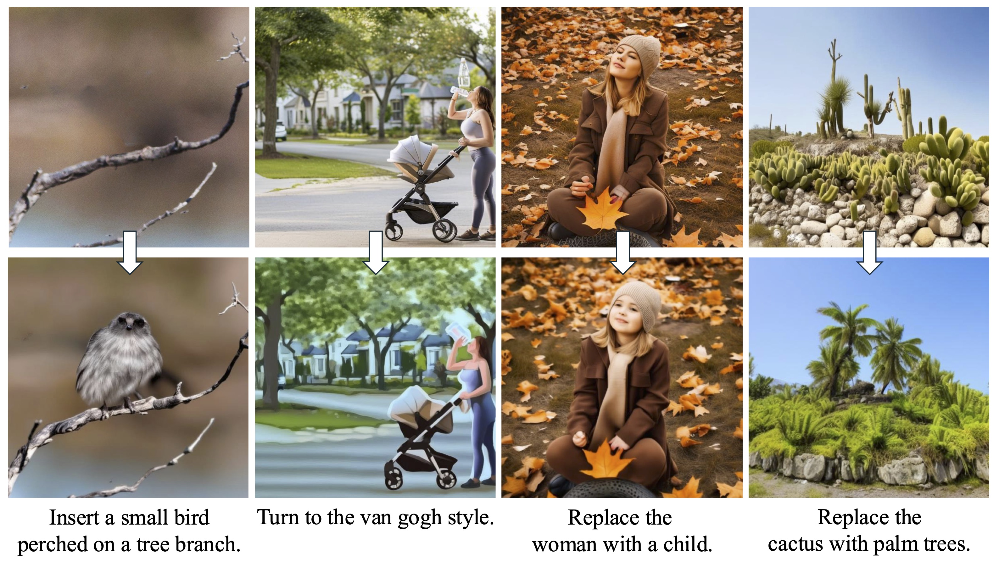
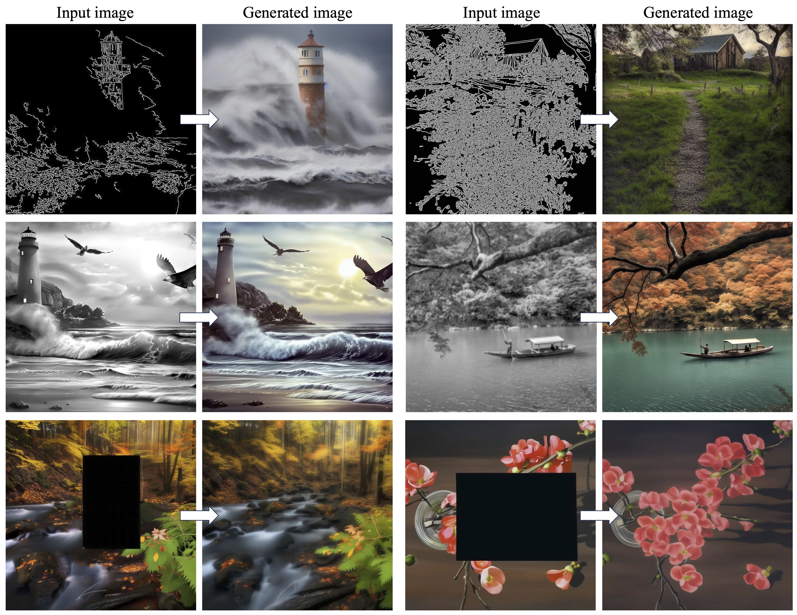

🐅 PUMA Empowering Unified MLLM with Multi-granular Visual Generation
The PUMA project aims to push the boundaries of visual generation and understanding within a unified multimodal large language model (MLLM) framework. As advancements in AI have enhanced vision-language models, there remains a challenge in handling the diverse needs of visual tasks—from generating creative, diverse images to precisely controlling visual edits. PUMA (Powering Unified MLLM with Multi-grAnular visual generation) addresses this by integrating multi-granular visual features, enabling a single MLLM to adapt to different levels of detail required for various visual tasks. Whether it’s generating an image from text, performing detailed image editing, or other visual tasks, PUMA offers a flexible and powerful solution.
By leveraging advanced multimodal pretraining and fine-tuning techniques, PUMA showcases cutting-edge capabilities in diverse applications. Join us as we explore the future of multimodal AI and take a significant step towards a more adaptable and unified approach to visual content generation.
If you're interested in being part of the PUMA project or contributing to related research, we’d love to connect! 👐
News
[18 Oct 2024] We are excited to release the preprint of PUMA, which integrates unified multi-granular visual generation and understanding capabilities.
Overall Framework
The PUMA framework for multimodal large language models (MLLMs) is structured around a multi-granular visual generation paradigm that addresses both the diversity and controllability requirements of various image generation tasks. It consists of three core components: a multi-scale image encoder, a unified multi-granular MLLM, and dedicated diffusion-based image decoders for each feature scale.
(a) Image Encoding: The image encoder processes input images and extracts multi-granular visual features. These features, ranging from fine-grained to coarse-grained representations, serve as the foundation for generating diverse and controllable images.
(b) Multi-granular Decoding: Using a set of diffusion-based decoders corresponding to each feature granularity, PUMA can reconstruct fine-grained details for tasks like image editing and generate diverse outputs for tasks like text-to-image generation.
(c) Autoregressive MLLM: The core MLLM is autoregressive and processes both text and visual tokens at multiple granularities, adapting to the requirements of various tasks such as conditional image generation, editing, and text-to-image generation.
Multi-granular Semantic Visual Decoding
PUMA's visual decoding process spans five granular image representations (f0 to f4) and corresponding decoders (D0 to D4), which are trained using SDXL. This allows PUMA to achieve visual decoding from precise image reconstruction to semantic-guided generation, supporting either high controllability or high diversity.
Diverse Text-to-image Generation
PUMA excels in diverse text-to-image generation by leveraging its coarse-grained visual features. The model enhances both creativity and coherence, producing high-quality images from a wide range of textual prompts.
Image Editing
PUMA enables precise manipulation of visual content using fine-grained image features. With its diffusion-based decoders, PUMA allows controlled editing, whether adding or removing objects, or adjusting styles, all while preserving the fidelity of the original image.
Image Conditional Generation
PUMA excels in controlled image generation based on specific inputs. Whether generating images from canny maps, performing inpainting, or colorizing, PUMA’s fine-grained decoding ensures precise and contextually appropriate results.
Notes
- Citation: If you find PUMA useful in your research, please consider citing us.
- License: Our project distributed under Apache 2.0 License.
Acknowledgements
Our core contributors include Rongyao Fang, Chengqi Duan, Kun Wang, Hongsheng Li, and Xihui Liu. Sincere thanks for their efforts. We would also like to thank Hao Li, Hao Tian, Xingyu Zeng, Rui Zhao, and Jifeng Dai, for their invaluable suggestions, guidance, and support.
The website template was borrowed from Open X-Embodiment.